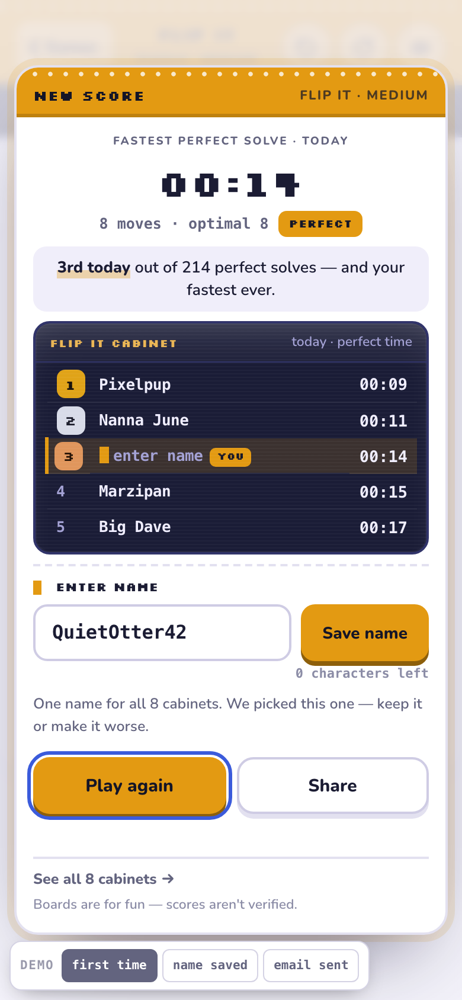

UX directions for leaderboards, name/email capture and registration
Recommendation. Build V3 Quiet Ledger as the base. It won with four of five personas and was the only version that measured clean on every stability check. The dissent (Marcus) changes one detail: ship the name field open, not folded. Take three parts from the others: V4's five-row "this week" window (with its Par row) as a tab on the table page, V1's Share string craft and pinned "where you actually are" strip, and V2's streak-first account page.
The emil-design-eng + animate polish pass completed for V2, V4 and V3 (V3 verified by Playwright; screenshot re-shoot skipped); the V1 agent was killed by network drops. The brief for V1 is in 03-polish-plan.md, ready to re-run.
The four versions
Same six screens, same flow rules (name → board, email → notifications, never bundled; meaning before identity; one-time ask site-wide; magic link only; honesty line), same stability rules. They differ in visual language, where the board lives and how the ask is framed. First-finish end card on mobile, light:

V1 Arcade CabinetMarquee shell, NEW SCORE ritual, board fills the card, /arcade page.open ↗Scores
| Persona | V1 Arcade | V2 Sticker | V3 Ledger | V4 Weekly |
|---|---|---|---|---|
| Priya, desktop PM, 3-minute gaps | 27 | 23 | 32 | 24 |
| Aisha, iPhone dark, designer | 26 | 26 | 27 | 24 |
| Marcus, Android on breaks | 25 | 28 | 22 | 30 |
| Sandra, iPad, streak, no motion | 18 | 24 | 32 | 24 |
| Dev, competitive, will spoof | 27 | 21 | 29 | 26 |
| Total of 175 | 123 | 122 | 142 | 128 |
| First-place votes | 0 | 0 | 4 | 1 |
Measured, 390×844, touch, reduced motion
| V1 | V2 | V3 | V4 | |
|---|---|---|---|---|
| End-card height, ask → saved | 844 → 844 | 805 → 801 (804 → 804 after polish) | 830 → 830 | 791 → 815 (752 → 752 after polish) |
| Controls under 44px on end-first | 4 | 1 (0 after polish) | 0 | 8 (0 after polish) |
| Smallest text | 8.5px | 10px | 11px | 10.5px |
| Motion declared under reduced motion | many | none | hover only | none |
| Share implemented | yes | no → yes after polish | no | yes |
| "#N of M" rank for you | no | no | yes | no |
| All-time tab · rules · honesty line | yes · yes · yes | yes · yes · yes | yes · yes · yes | yes · yes · yes |
Name cap · <b> · blank · emoji | 12 · raw · fallback · ok | 16 · raw · fallback · ok | n/a (folded) | 18 · raw · fallback · ok |
| Email/sign-in words on returning card | none | none | none | none |
| Keyboard pop on load · horizontal scroll | no · none | no · none | no · none | no · none |
Verdicts
- V3 Quiet Ledger recommendedPraised: ghost row that fills as you type, wit lines, true near-black dark mode, zero small targets, constant 830px card, "#37 of 214 today · #612 all-time". Gaps: Share does nothing, table tabs 38px, demo pill overlaps Play again on 390, no weekly tab, card scrolls ~50px on 844. All small.
- V1 Arcade CabinetPraised: the ritual, working Share string, byte-identical heights across states, the most complete board (8 cabinets, 3 tabs, house rules, pinned row). Gaps: 8.5px pixel captions, 32px Not now, three 42px icons, blink under reduced motion, tone skews gamer. Best as a per-game skin later.
- V4 Weekly TablePraised: one component on four screens, calm league copy, "Name only. No account, no email, nothing to confirm.", Share string. Gaps: 24px jump on save, eight small targets, countdown reads as pressure to two personas, email pitch on the first finish, advertises emptiness at low traffic.
- V2 Sticker BookPraised: warmth, sticker with your time on it, no motion under reduced motion. Gaps: fake Share, two Not now buttons at once, email box visible before step 1 is decided, "SIGNED IN AS" chip, longest card, handwriting font risk, collection only pays off on return.
Fixes for whichever ships
- Reserve every dynamic block's height and assert it in a test.Card height identical across first-time / saved / sent / loading / empty / error.
- 44×44 hit areas on every control.Topbar icons, tabs, difficulty pills, back links, footer links. Visual size can stay.
- Real Share.
navigator.sharewith clipboard fallback and a Link copied confirmation that doesn't move layout. - Names.Cap 12–16 chars, trim, collapse whitespace, fall back to the generated name, sanitise server-side, render as text only. All three testable versions store
<b>hi</b>raw today. - No text under 11px.No pixel or handwriting type for anything that must be read quickly.
- Email after the name, or on the account page only.Never bundled with the board.
- Reduced motion.No keyframe animation on the end card; hover transitions may stay.
Server-side, any version
Per-player rows (player id, name, per-game and per-period bests), rank and count aggregates returned with the submit RPC, a distribution aggregate for V3, a weekly period for V4, magic-link auth via Supabase email OTP, rate limits and plausibility clamps per game, a hidden flag for moderation. A schema change, not a rendering change. Do it after the shell refactor in REPORT.md (A1, A9) so the end card is built once.
Not done
- Polish pass with the two skills blocked by networkDone for V2, V4 and V3 (V3: 717px card in all states, name field open by default, Share real; screenshots not re-shot): V4's 24px jump and eight small targets are fixed and the countdown is gone. The V1 agent was killed by connection drops before writing. Brief in
03-polish-plan.md. Persona scores for V2 and V4 predate their polish. - No human on a device yet.Everything was reviewed from screenshots and scripted Playwright.